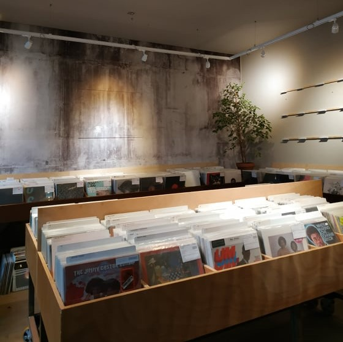

Latest articles

Recommending: Donna Dimi
GRAPHIC DESIGN

If I had to choose a word to describe Donna’s work I think I would choose the word “subtle”. You can find a lot of color gradients, geometric shapes and curvy lines giving the work a surreal feeling, which are often balanced out by more natural elements such as bodies, hands, faces, flowers. There is a really interesting contrast between...
3345: an interview
MUSIC
Selections of new and 2nd hand records, a great diversity of genres, an important presence online with different content on facebook and instagram, also curating cultural events, small concerts, parties or online dj sets. It seems they can do it all and looks like it’s only the beginning...
Recommending: Charif Megarbane
MUSIC

The composition in itself was quite minimalistic, it was just rhythmics on drums and a clear guitar sound. However I was immediately hooked by the energy coming out of their performance, letting yourself be taken away by the flow created by those fast percussions and guitar melodies...

Recommending: Habibi Funk
MUSIC

The first thing that comes to my mind when thinking about the Berlin-based label “Habibi Funk” is “digging culture”. Focusing on the music of the Arab world, Habibi Funk goes on the fantastic search of tapes to share the work of talented artists across the Middle East and North Africa...
Charles-André Coderre
FILMS

Originally from Quebec in Canada, Charles-André Coderre is an analog film director and is known for his film experimentation. Experimenting with film development techniques a lot, his work really has a unique atmosphere to it...

Alia Romagnoli
PHOTOGRAPHY

Taking mainly portraits, Alia Romagnoli is a photographer and art director with a very colorful universe. Often playing with monochromatic atmospheres, her pictures are full of different textures, focusing on colorful and outstanding makeups, flowers or clothing...
9 sountrack composers for a diverse representation
MUSIC

From the many underrated things that exist on this planet, I believe soundtrack composers have to be considered as one of them. I am always so surprised and amazed when I discover a new soundtrack composer. How come a vast majority of us have never heard their names although they play such an important role in creating a univers...